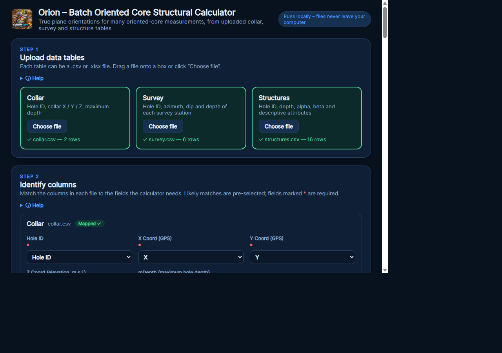
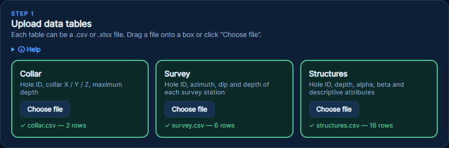
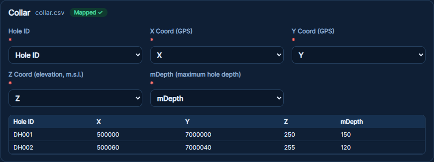
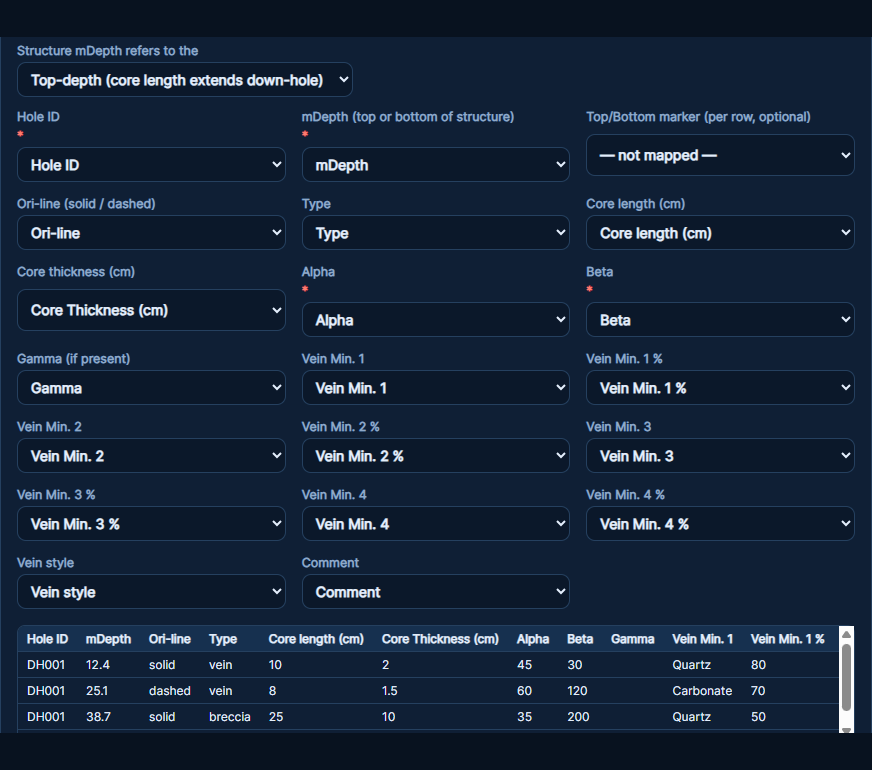
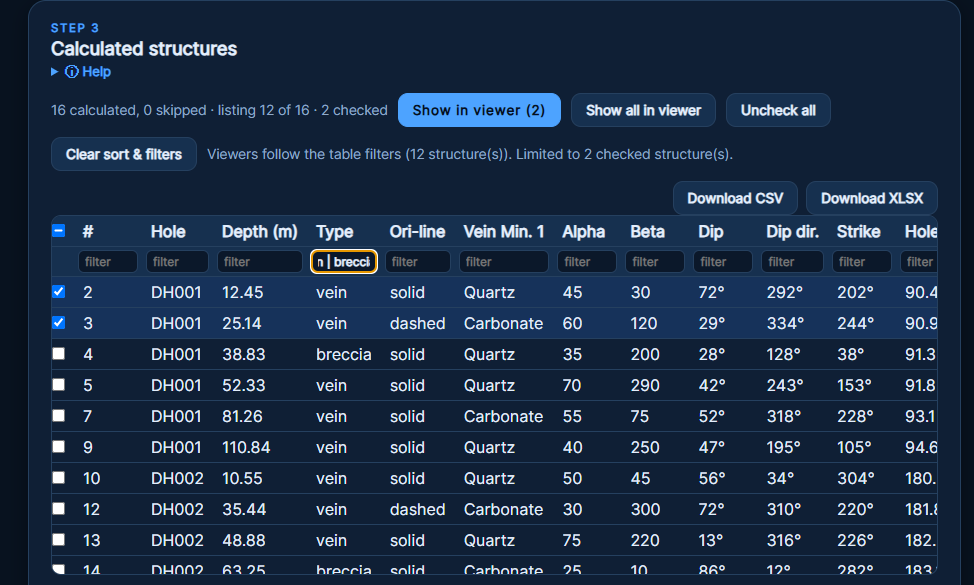
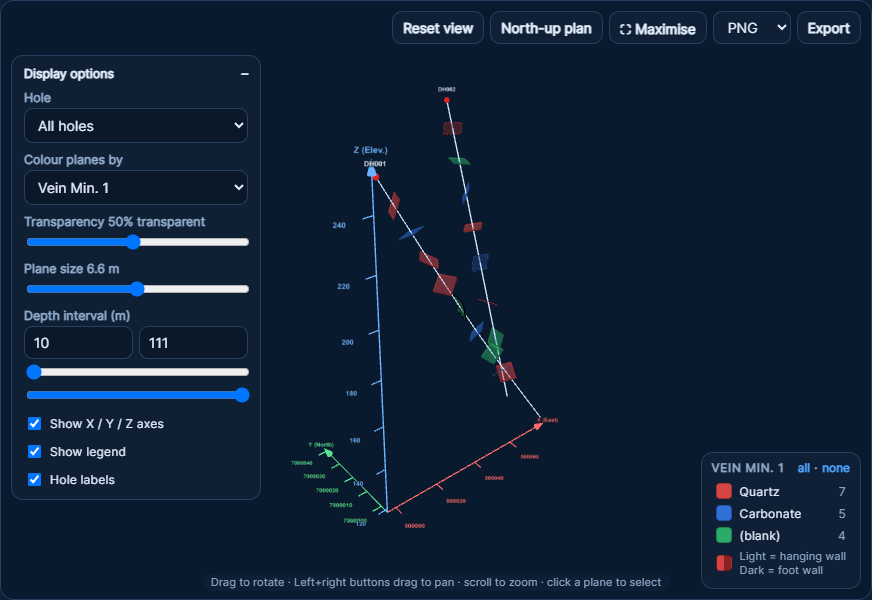
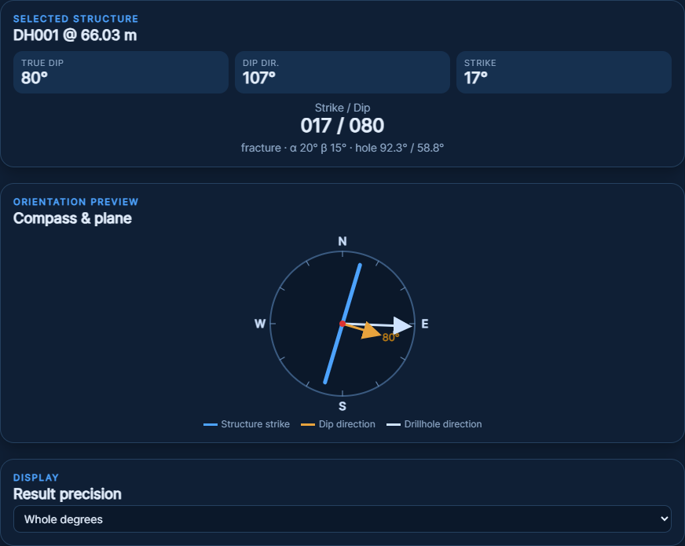
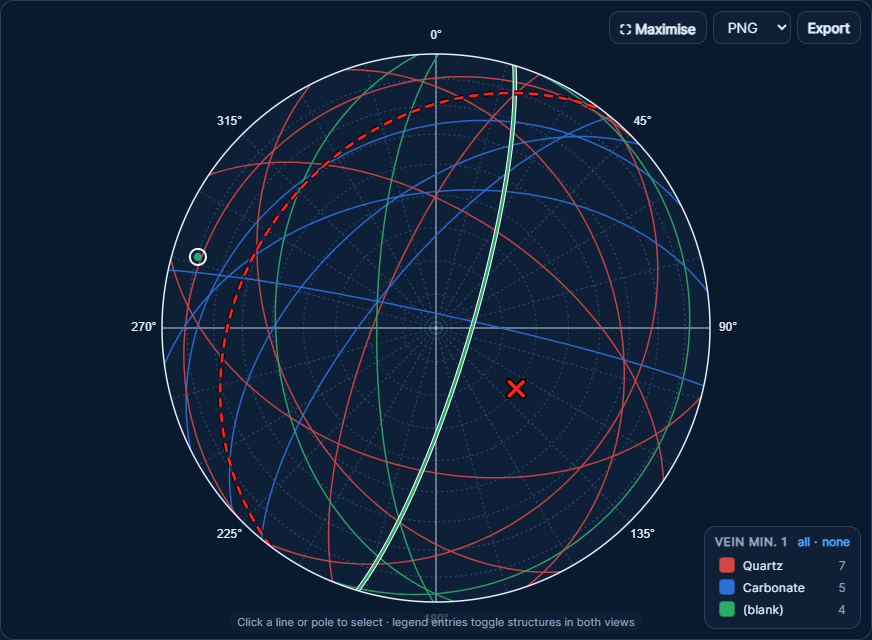
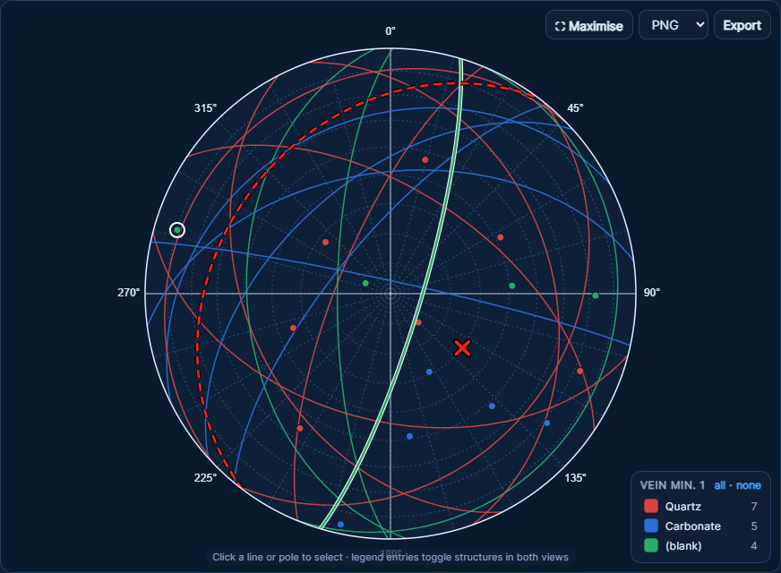

User Guide · Version 3.0 · 2026
Developer: Dr. L. Hulijeli

Orion converts the alpha / beta core-orientation angles of many structures at once into true dip, dip direction and strike, using the drill-hole collar and survey data. You upload three tables (Collar, Survey, Structures) as CSV or XLSX, tell Orion which column holds which value, and press Calculate. Results appear in a sortable, filterable table, a 3D drill-trace viewer and a stereonet.
The app works offline; your data never leaves your computer.
| Option | How |
|---|---|
| Portable EXE | Double-click Orion-v3.0.exe. No install needed. |
| One-click installer | Keep Install-Orion.bat, Install-Orion.ps1, Orion-Certificate.cer and Orion-v3.0.msix in one folder. Double-click the .bat and accept the administrator prompt. It trusts the certificate and installs the app. |
Load the three tables, each as .csv or .xlsx (for Excel files you can pick the sheet).

Example files are in the sample_data folder of the project.
When a table loads, a mapping card opens. For each required item, choose the column in your file that holds it. Orion tries to guess automatically; check each one.

Hole ID, X, Y, Z, Azimuth (hole trace), Dip (hole trace), Depth of survey, Hole size.
| Field | Meaning |
|---|---|
| Hole ID, Depth | Where the structure is. A selector sets whether the depth is the top or the bottom of the structure. |
| Ori-line | solid = high certainty, dashed = moderate. |
| Type | vein, breccia, contact, fracture, bedding, etc. |
| Core length / thickness (cm) | Length along the core and true width of the structure. |
| Alpha, Beta, Gamma | Orientation angles measured on the core. Alpha and Beta are required; Gamma is optional. |
| Vein Min. 1–4 and % | Vein minerals and their percentages. |
| Vein style, Comment | Free text. |

Press Calculate once all three tables are mapped. Each section has a Help drop-down with short instructions.

|, comma or semicolon, e.g. stringer | vn shows either. Exclude with !, e.g. !stringer. Numeric columns accept >10, <=45 and ranges 10..20.
| Rotate | Left-drag |
| Pan | Left + right buttons together |
| Zoom | Scroll wheel |
| Select a plane | Click it – the table scrolls to and highlights its row |
Reset view, North-up plan (looks down with north at the top), Maximise, and Export (PNG, JPEG or PDF).
Each plane is two-tone: the lighter colour with a solid border is the hanging-wall side; the darker colour with a dotted border is the foot-wall side, depending on which side you are viewing.

Select a structure in the table, 3D viewer or stereonet to see its true dip, dip direction, strike and strike/dip notation, plus a compass showing strike (blue), dip direction (orange) and the drill-hole direction (white). Result precision switches between whole and decimal degrees.


| Problem | Fix |
|---|---|
| Nothing calculates | Check all three tables are loaded and mapped; depth, alpha, beta must be numeric. |
| Some rows skipped | Missing or non-numeric angles, or hole ID not found in Collar/Survey. |
| Viewers show fewer structures than expected | Check table filters, depth interval, legend toggles and checked rows. |
| App says it has expired | Contact Dr. L. Hulijeli for a renewed version. |
Orion v3.0 © 2026 Dr. L. Hulijeli. Results should be verified by a qualified geologist. Contact the developer for permissions and licensing.